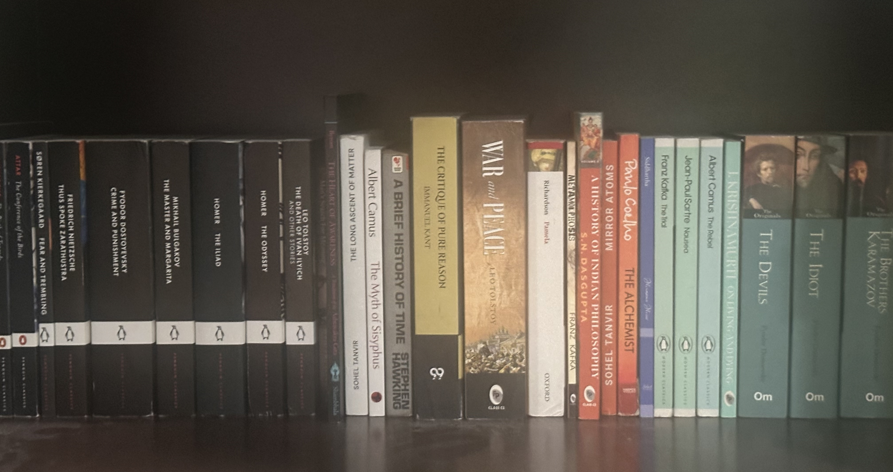

“Life is a mystery. The more you understand it, the more mysterious it becomes.”
Osho, And the Grass Grows by Itself, talk 5. Source
These pages carry my name, but the work of learning to think and write has never taken place alone. I want to acknowledge some of the people and books that have accompanied it.
Anata Sir
I thank Anata Sir, my English teacher, for his place in my education and in the continuing work of learning to express a thought clearly. A thought can feel complete while it remains inside the person thinking it. Language asks more of it. It asks whether the sentence actually says what was meant, whether another person can follow it, and whether what sounded convincing can survive being read carefully.
My gratitude is for that work of learning English, and for the part a teacher has in making a student take words seriously. Whatever I go on to write, I want to retain the willingness to return to a sentence and make it clearer.
Osho
I owe a substantial debt to Osho. His work has been an important presence in the questions I return to about religion, freedom, desire, the body, and the strange authority people give to suffering. I am grateful for the insistence that these questions belong to the life being lived, with its laughter, affection, uncertainty, and ordinary contradictions.
What has stayed with me is the permission to remain with a question long enough for an inherited answer to become visible as an answer someone once gave. I do not want gratitude to turn into another way of avoiding examination. The value of a teacher's words has to remain alive in the attention they awaken. If I keep a conclusion only because I have become attached to the person who said it, the questioning has stopped too soon.
For the seriousness with which he approached freedom, and for the place he gave to joy and bodily life within that discussion, I offer my thanks. That influence belongs in these acknowledgements. The responsibility for the arguments I finally put on the page remains mine.
Books
The books I have read over the past years have left different kinds of work unfinished in me. Some gave a question a sharper form. Others made a familiar answer harder to repeat. I am grateful for both experiences.


| Author | Book |
|---|---|
| Attar | The Conference of the Birds |
| Søren Kierkegaard | Fear and Trembling |
| Friedrich Nietzsche | Thus Spoke Zarathustra |
| Fyodor Dostoevsky | Crime and Punishment |
| Mikhail Bulgakov | The Master and Margarita |
| Homer | The Iliad |
| Homer | The Odyssey |
| Leo Tolstoy | The Death of Ivan Ilyich and Other Stories |
| Fyodor Dostoevsky | The Brothers Karamazov |
| Sohel Georgiadis | The Long Ascent of Matter |
| Albert Camus | The Myth of Sisyphus |
| Stephen Hawking | A Brief History of Time |
| Immanuel Kant | The Critique of Pure Reason |
| Leo Tolstoy | War and Peace |
| Samuel Richardson | Pamela |
| Franz Kafka | Metamorphosis |
| S. N. Dasgupta | A History of Indian Philosophy |
| Sohel Georgiadis | Mirror Atoms |
| Paulo Coelho | The Alchemist |
| Hermann Hesse | Siddhartha |
| Franz Kafka | The Trial |
| Jean-Paul Sartre | Nausea |
| Albert Camus | The Rebel |
| J. Krishnamurti | On Understanding |
| Fyodor Dostoevsky | The Devils |
| Fyodor Dostoevsky | The Idiot |